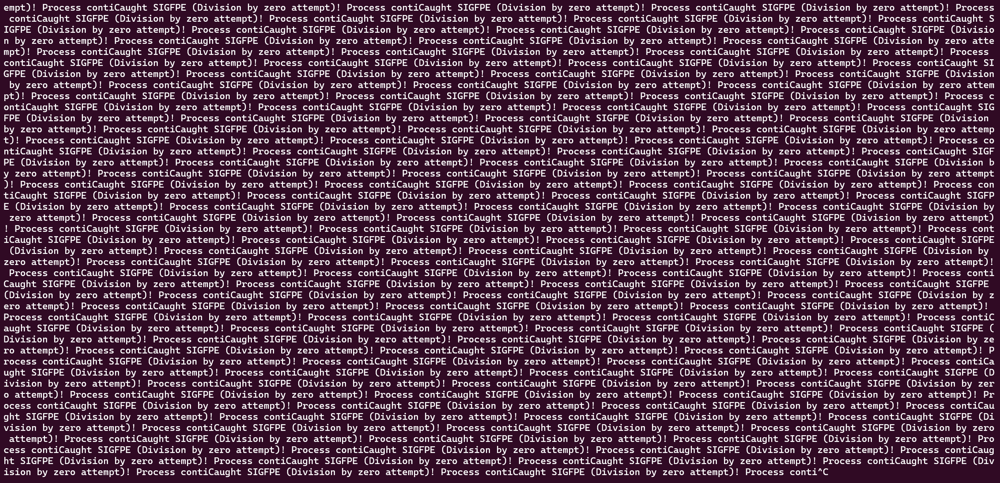

关于Linux信号的一些思考
今天偶然间看到一个介绍 Linux 信号的视频：别再杀进程了！让 Ctrl+C 变成“喵”…（用信号实现）哔哩哔哩_bilibili ，虽然讲的东西很基础，但也引发了我思考一些之间没有很关注的问题。在与 LLM “讨论” 一番过后，便想将这些思考记录下来，算是查漏补缺吧。
信号的一面
有关信号的具体用法，不是本文关注的重点，这部分内容可以翻看《深入理解计算机系统》（CSAPP）的异常控制流章节，这也是我最早建立对“信号”认识的地方。
先下定义：信号的本质是操作系统提供的一种进程间通信（IPC）机制，其他两种主要的进程间通信进制为共享内存和消息传递。
其中管道通常也被认为是一种特殊的消息传递机制，它们的核心设计都是不依赖于两个进程（以下称作 A 和 B）共享一段内存空间，而是将内核作为一个中间层，将数据代为转发，即 A -> kernel -> B。只不过常规的消息传递转发的是结构化的数据，而管道通常直接进行数据流的传递。
与共享内存和消息传递不同，信号通常并不直接传送数据，而是传达一系列预设编号的通知，进程在收到通知后，根据通知类别的不同，进行分发处理。简单类比就像是进程与进程之间的 “syscall” 一样，很直觉的设计。
信号的另一面
我这里更想要介绍的是，信号作为一个间接层，为操作系统的进程管理带来了更大的灵活性。具体我们可以看下面这个有趣的程序案例：
1 |
|
上述程序会在代码 c = a / b; 处触发除零异常，通常的想法可能是程序在此之后便会直接退出。我们尝试运行该程序，结果如下：

程序将会反复收到 SIGFPE 信号，并调用相应的信号处理函数，而始终没有退出，直到我们手动按下键盘 ctrl + c 向进程发送 SIGINT 信号，由于进程没有对该信号的处理函数进行定义，使得其执行了默认例程——也就是退出。
我们对程序运行的过程进行梳理：首先代码 c = a / b; 触发了除零异常，CPU 将自动设置其 PC 寄存器值，并跳转到内核的异常处理函数中执行，并对不同的异常类型进行分发处理。在确认本次异常的原因为算术异常，此时内核并不会选择直接将进程杀死，而是向其发送一个 SIGFPE 信号，随后在恢复到进程被中断指令处执行前，对待处理信号 SIGFPE 进行处理，即调用其自定义的信号处理函数：打印相关信息。在全部信号处理完成后，恢复到 c = a / b 处重新执行，然后再次触发除零异常，以此往复……
根据上面的描述，可以看到之所以程序没有按照推测的那样直接退出，是因为内核在对该异常的处理没有选择直接杀死，选择了转发信号，告知进程“你刚刚触发了一个算术异常”，进程可以自行选择对该异常的处理方式，合理的做法自然是打印提示信息后退出程序，但是我们选择仅打印提示信息，这就导致反复触发该算术异常，造成“死循环”。
可以看到，信号机制也可以看作是操作系统提供的一种将事件（包括异常和中断）处理“分发”给用户进程自行完成的机制。这样的设计改变了内核总揽全局的做法，赋予了进程更大的自主权，也带来了更大的灵活性。
对于一些没有信号机制的操作系统，它们在遇到上述情况时的选择则是直接在内核的异常处理函数中进行统一处理，比如教学操作系统 xv6 中：
2
3
4
5
6
7
8
9
10
11
12
13
14
15
16
17
18
19
20
21
22
23
24
25
26
27
28
29
30
31
32
33
usertrap(void)
{
[...]
if(r_scause() == 8){
// system call
if(killed(p))
kexit(-1);
// sepc points to the ecall instruction,
// but we want to return to the next instruction.
p->trapframe->epc += 4;
// an interrupt will change sepc, scause, and sstatus,
// so enable only now that we're done with those registers.
intr_on();
syscall();
} else if((which_dev = devintr()) != 0){
// ok
} else if((r_scause() == 15 || r_scause() == 13) &&
vmfault(p->pagetable, r_stval(), (r_scause() == 13)? 1 : 0) != 0) {
// page fault on lazily-allocated page
} else {
printf("usertrap(): unexpected scause 0x%lx pid=%d\n", r_scause(), p->pid);
printf(" sepc=0x%lx stval=0x%lx\n", r_sepc(), r_stval());
setkilled(p);
}
[...]
}可以看到，它在遇到算术异常时的选择，就是直接将进程杀死。
 微信
微信 支付宝
支付宝